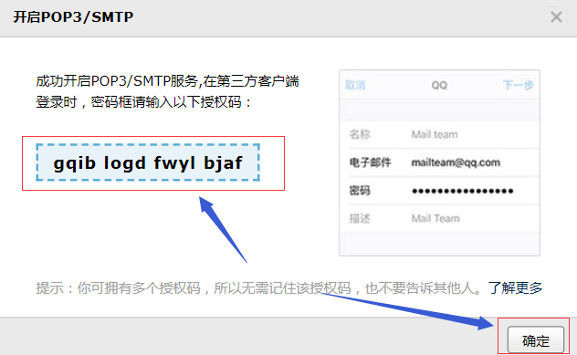

双机热备份的特点是任一台数据库均可作为主机，另一台作为从机冗余备份，在某一时刻保证有且仅有一台主机接收数据库系统外部请求。
一、环境准备
1.两台能联网的 Ubuntu 16.04
2.安装MySQL 5.7
root用户下：1
2apt update
apt install mysql-server mysql-client
安装成功后通过mysql -uroot -p 进入mysql终端：1
2
3USE mysql;
GRANT ALL PRIVILEGES ON *.* TO 'root'@'%' IDENTIFIED BY '密码' WITH GRANT OPTION; # 将密码处替换为root密码
FLUSH PRIVILEGES;
3.安装Keepalived1
2
3
4apt update
apt install libssl-dev openssl libpopt-dev
apt install libnl-3-dev libnl-genl-3-dev
apt install daemon libc-dev libnfnetlink-dev keepalived
vim /etc/rsyslog.d/50-default.conf
取消下列配置的注释1
2
3
4*.=info;*.=notice;*.=warn;\
auth,authpriv.none;\
cron,daemon.none;\
mail,news.none -/var/log/messages
1 | cp /usr/share/doc/keepalived/samples/keepalived.conf.sample /etc/keepalived/keepalived.conf |
二、 配置主从复制
配置节点1
vim /etc/mysql/mysql.conf.d/mysqld.cnf
1 | [mysqld] |
重启mysql ： service mysql restart 后进入MySQL：1
2
3
4
5
6
7mysql> show master status;
+------------------+----------+--------------+-------------------------------------------------+-------------------+
| File | Position | Binlog_Do_DB | Binlog_Ignore_DB | Executed_Gtid_Set |
+------------------+----------+--------------+-------------------------------------------------+-------------------+
| mysql-bin.000001 | 154 | | mysql,information_schema,performance_schema,sys | |
+------------------+----------+--------------+-------------------------------------------------+-------------------+
1 row in set (0.00 sec)
配置节点2
vim /etc/mysql/mysql.conf.d/mysqld.cnf
1 | [mysqld] |
service mysql restart重启服务后进入MySQL终端：1
2
3
4
5
6CHANGE MASTER TO
MASTER_HOST='192.168.179.86',
MASTER_USER='root',
MASTER_PASSWORD='ustb_scce',
MASTER_LOG_FILE='mysql-bin.000001',
MASTER_LOG_POS=154;
显示 Query OK, 0 rows affected, 2 warnings (0.03 sec)
开启主从同步并查看节点2状态：1
2start slave;
show slave status\G
注意观察Slave_IO_Running和Slave_SQL_Running需要均为Yes
测试主从
从其他地方找一个库dump下来： mysqldump -uroot cs_notes > create-cs_notes.sql -p
在节点1机器上创建库 create database cs_notes;
然后导入文件 mysql -uroot cs_notes < create-cs_notes.sql -p
可以在节点1和节点2都观察到数据库表文件的更新
三、Keepalived配置虚拟IP实现双主节点
在云管理平台为2个节点分配内网虚拟IP，如172.16.10.15。
节点1keepalived配置1
2
3
4
5
6
7
8
9
10
11
12
13
14
15
16
17
18
19
20
21
22
23
24
25
26
27
28
29
30
31
32
33
34
35
36
37
38
39global_defs {
notification_email {
root@localhost
}
notification_email_from node07_keepalived@localhost
smtp_server 127.0.0.1
smtp_connect_timeout 30
router_id node07 # 主机名
}
vrrp_script chk_mysql_port { # 检测mysql服务是否在运行
script "/opt/chk_mysql.sh" # 这里通过运行脚本检测
interval 2 # 脚本执行间隔2s
weight -5 # 脚本结果导致的优先级变更，检测失败（脚本返回非0）则优先级-5
fall 2 # 连续2次检测失败才算
rise 1 # 检测1次成功就算成功
}
vrrp_instance VI_1 {
state MASTER # 节点1
interface eth0 # 绑定虚拟IP的网络接口
mcast_src_ip 192.168.179.86
virtual_router_id 51 # VRRP组名，两个节点的设置必须一样，以指明各个节点属于同一VRRP组
priority 101 # 节点1的优先级，越大优先级越高，节点2的优先级比这个低一点
advert_int 1 # 组播消息发送间隔，两个节点必须设置一样
authentication { # 设置验证信息，两个节点必须一致
auth_type PASS
auth_pass test1234
}
virtual_ipaddress { # 指定虚拟IP，两个节点必须设置一样
172.16.10.15
}
notify_master "/etc/keepalived/mail_notify.sh master"
notify_backup "/etc/keepalived/mail_notify.sh backup"
notify_fault "/etc/keepalived/mail_notify.sh fault"
track_script {
chk_mysql_port
}
}
节点2 keepalived配置：1
2
3
4
5
6
7
8
9
10
11
12
13
14
15
16
17
18
19
20
21
22
23
24
25
26
27
28
29
30
31
32
33
34
35
36
37
38
39global_defs {
notification_email {
root@localhost
}
notification_email_from node08_keepalived@localhost
smtp_server 127.0.0.1
smtp_connect_timeout 30
router_id node08 # 主机名
}
vrrp_script chk_mysql_port { # 检测mysql服务是否在运行
script "/opt/chk_mysql.sh" # 这里通过运行脚本检测
interval 2 # 脚本执行间隔2s
weight -5 # 脚本结果导致的优先级变更，检测失败（脚本返回非0）则优先级-5
fall 2 # 连续2次检测失败才算
rise 1 # 检测1次成功就算成功
}
vrrp_instance VI_1 {
state BACKUP # 两台配置节点均为BACKUP
interface eth0 # 绑定虚拟IP的网络接口
mcast_src_ip 192.168.179.85
virtual_router_id 51 # VRRP组名，两个节点的设置必须一样，以指明各个节点属于同一VRRP组
priority 99 # 节点1的优先级，节点2的优先级比这个低一点
advert_int 1 # 组播消息发送间隔，两个节点必须设置一样
authentication { # 设置验证信息，两个节点必须一致
auth_type PASS
auth_pass test1234
}
virtual_ipaddress { # 指定虚拟IP，两个节点必须设置一样
172.16.10.15
}
notify_master "/etc/keepalived/mail_notify.sh master"
notify_backup "/etc/keepalived/mail_notify.sh backup"
notify_fault "/etc/keepalived/mail_notify.sh fault"
track_script {
chk_mysql_port
}
}
vim /opt/chk_mysql.sh1
2
3
4
5
6
7
8
9
10
11
12
13
14
15
16
17
18
19
20
21
22
23
24
25
26
27
28
29
30
31
32
33
34
35
36
37!/bin/bash
counter=$(netstat -na|grep "LISTEN"|grep "3306"|wc -l)
if [ "${counter}" -eq 0 ]; then
/etc/init.d/keepalived stop
fi
``
编写异常处理脚本，复制到两台机器
vim /etc/keepalived/mail_notify.sh
```shell
!/bin/bash
contact1='yaoqijun@xs.ustb.edu.cn'
contact2='wenyoupeng@xs.ustb.edu.cn'
notify() {
local mailsubject="$(hostname) to be $1, vip floating"
local mailbody="$(date +'%F %T'): vrrp transition, $(hostname) changed to be $1"
echo "$mailbody" | mail -s "$mailsubject" $contact1
echo "$mailbody" | mail -s "$mailsubject" $contact2
}
case $1 in
master)
notify master
;;
backup)
notify backup
;;
fault)
notify fault
;;
*)
echo "Usage: $(basename $0) {master|backup|fault}"
exit 1
;;
esac
退出后分配权限： chmod +x /etc/keepalived/mail_notify.sh
四、配置报警邮件通知
1 | apt install mailutils |
测试发送：1
echo "test email" | sendmail <email_addr>
读邮件操作：1
2
3mail
t *
q
配置SMTP服务器，这里以QQ邮箱为例：

vim /etc/mail.rc
1 | set from=用于发送邮箱 |